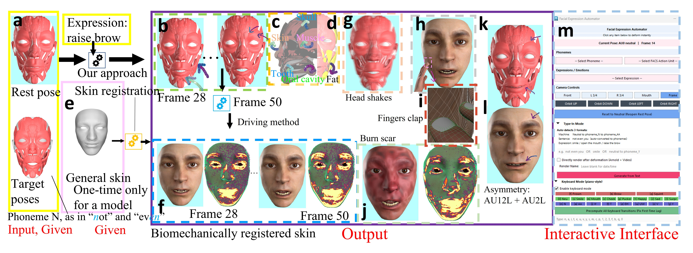
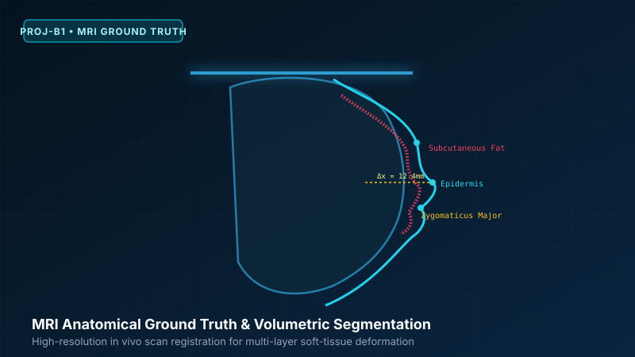
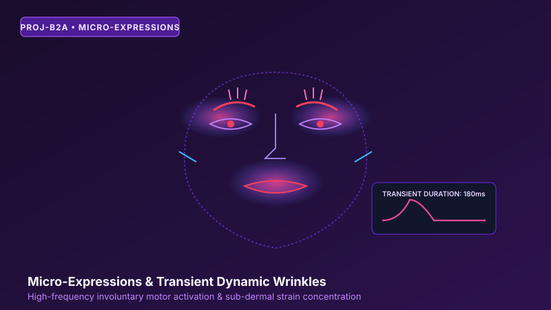
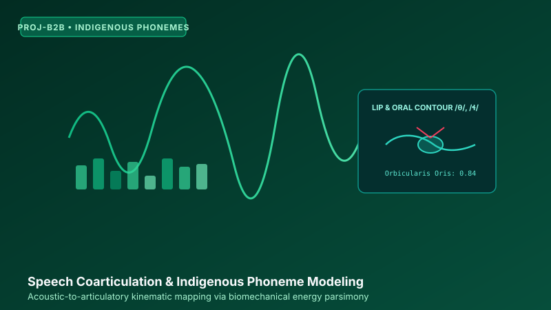
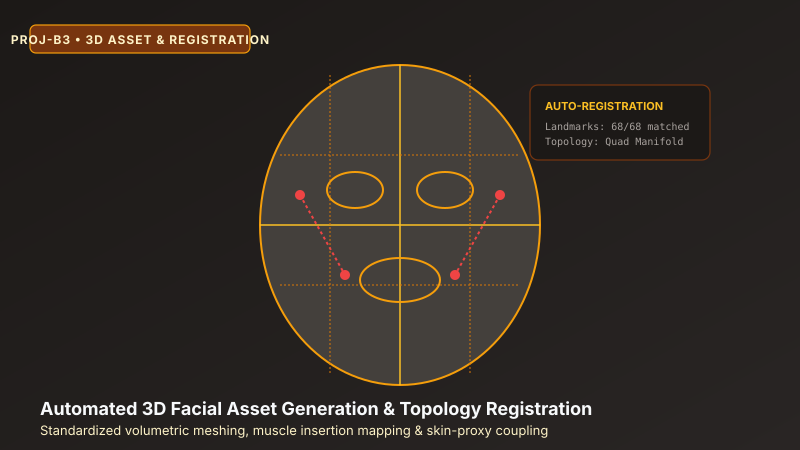
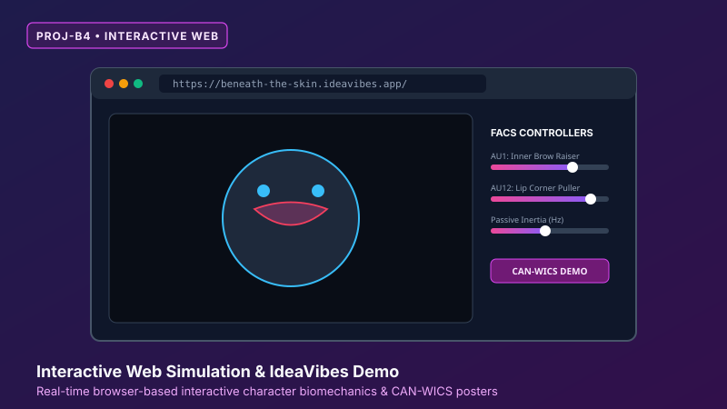

Our Lab Members & Research Team
We are an interdisciplinary team at Simon Fraser University researching physically and biomechanically based facial animation, soft-tissue continuum solvers, high-resolution biological ground-truth validation (MRI & sEMG), speech coarticulation, and interactive character graphics, affiliated with the GrUVi (Graphics, Usability, and Visualization) Laboratory.
Research Leadership & Mentorship

Zhiyun (Richard) Peng 彭志云

Beneath the Skin: Biomechanical Facial Framework
Propagating internal muscle dynamics to epidermal skin layer via energy parsimony & continuum physical simulation.
Project B1: Biological Ground Truth (MRI & sEMG)

Gurkaran Singh

Automated Error-Metric Pipeline
Building quantitative benchmark tools calculating precise deviations between simulated biomechanical paths and physiological recordings.

Viktor Zepeda Sanchez
In-Vivo MRI Ground-Truth Protocol
Mapping simulation structural integrity and tissue dynamics against dynamic MRI and sEMG physiological data.

Oleh Kutryk
Physiological Muscle Firing Analysis
Comparing simulated motor unit firing rates and activation trajectories against physiological ground-truth data.

Nikolay Deinego
Volumetric MRI Alignment
Aligning volumetric MRI scans to calculate landmark displacement error metrics against empirical biological data.
Project B2: Micro-Expressions & Indigenous Phonemes

Karl Onasa

Micro-Expression Muscle Bursts
Injecting high-frequency, low-duration muscle activations to simulate transient repressed affective states.

Ryan Marwaha
Temporal Strain & Jaw Kinematics
Measuring temporal strain distribution and jaw displacement against real human reference video footage.

Daiwik Marrott
Motor Unit Isolation & Testing
Building documented asset libraries of muscle activation parameters tailored for fine-grained movements.

Afraz Syed

Indigenous Phoneme Kinematics
Modeling specific lip-rounding and facial tension patterns for ejective consonant inventories in Indigenous languages.

Connor Churcott
High-Frequency Dynamic Wrinkles
Investigating transient involuntary muscle impulses and subtle periorbital strain field evolution.

Neev Madaan
Acoustic Articulation Synthesis
Extracting acoustic speech features to drive continuous biomechanical motor controllers for vocal articulations.
Project B3: Automated 3D Asset Generation

Sophia Don Tranho

3D Asset Initialization Tool
Automating the construction of personalized facial assets, skull dimensions, and rest muscle anchor points.

William Huang
Monocular Landmark Pipeline
Comparing accessible RGB video estimation against volumetric scan generation to scale personalized avatar setup.
Project A1: Skin-to-Muscle Registration

Qiu Shi
Non-Rigid ICP Registration
Replacing manual software setup by automating skin-to-muscle volumetric shrink-wrapping algorithms.

Sevy Veeken
Whole-Head Alignment Pipeline
Transitioning from manual artistry to algorithmic tools that reduce hours of mesh alignment to minutes.
Project B4: Develop Physical Simulator (IdeaVibes Competition)

Feifei Yu (Faye)

Interactive WebGL Facial Demo
Mounting physically driven facial controllers into the browser client and preparing entrepreneur competition deliverables.

Ilian Khankhalaev
Standalone Web Engine Migration
Smartly querying SOTA LLMs to build functional simulator modules: adding gravity, strain energy, and collisions.

Elton
Showcase UI & Interactive Controls
Optimizing client-side evaluation of muscle parameters and interactive UI for North American competition review.
Open Research Slots (Ready to Fill)
[Open Research Slot 1]
members.html & drop thumbnail
images/work/student_work_1.jpg
Upcoming Research Milestone
Placeholder for student researcher's simulation screenshot, validation plot, or experimental results.
[Open Research Slot 2]
members.html & drop thumbnail
images/work/student_work_2.jpg
Upcoming Research Milestone
Placeholder for student researcher's simulation screenshot, validation plot, or experimental results.
[Open Research Slot 3]
members.html & drop thumbnail
images/work/student_work_3.jpg
Upcoming Research Milestone
Placeholder for incoming researcher focusing on physical modeling or speech coarticulation.
On-Going Research Projects Deep Dive
6 ProjectsValidating Physically Based Facial Animation via Biological Ground Truth
A persistent challenge in physically based facial animation is proving that simulated muscle trajectories accurately reflect true human biology, rather than merely producing visually plausible surface deformations. In this project, the student will address this by quantitatively evaluating our lab’s facial simulation framework against biological ground truth. The initial phase will involve building an automated error-metric pipeline to carefully compare our simulated muscle activations and landmark displacement paths against open-access dynamic magnetic resonance imaging (MRI) and surface electromyography (sEMG) datasets. If existing public datasets prove insufficient, unstructured, or too noisy for a direct one-to-one comparison, the project will strategically pivot to defining an in-vivo validation protocol. This alternative pathway will explore how we can actively measure actual muscle changes and firing rates via localized MRI scans and/or sEMG to verify the physical grounding of our model.
As the project progresses, the student will seamlessly integrate their findings into three core deliverables. First, they will develop a robust evaluation pipeline, specifically a Python-based error-metric tool designed for calculating precise deviations between simulated biomechanical paths and recorded physiological data. Second, they will produce a detailed comparative analysis, culminating in a quantitative study that maps the simulation's structural integrity and energy dynamics against actual human data. Finally, the student will synthesize their findings into a formal academic report or a comprehensive proposed in-vivo data collection protocol, establishing a definitive foundation to prove the anatomical correctness of the simulation for future research.
Synthesizing Fine-Grained Facial Dynamics: Micro-Expressions and Indigenous Phonemes
While current facial animation models are heavily optimized for standard English phonemes and exaggerated macro-expressions, they often fail to capture highly specific, fine-grained facial dynamics. In this project, the student will push the limits of our physically based facial simulation framework by targeting two complex articulation categories. First, they will synthesize the unique phonetic inventories of Canadian Indigenous languages (such as Coast Salish or Hul’q’umi’num’), which demand highly specific lip-rounding and facial tension for ejective sounds. Second, they will simulate involuntary micro-expressions—like repressed smiles or fleeting brow furrows—by injecting asymmetric, high-frequency, low-duration muscle bursts into the pipeline. The goal is to isolate the specific motor unit activations required for these complex movements and determine if our physical parameters can accurately capture such distinct skin, lip, and jaw dynamics without losing structural volume.
Throughout the project, the student will operate as a rigorous experimentalist at the intersection of computer graphics, linguistics, and psychology. They will learn to manage a complex academic pipeline, design targeted experiments based on phonetic and affective data, and critically evaluate the physical output against real-world video references. Ultimately, the student will produce a documented asset library of muscle activation parameters tailored for these fine-grained movements. Alongside this database, they will deliver a visual and numerical comparative analysis measuring temporal strain distribution and jaw displacement against real human footage, culminating in an academic report evaluating whether the current simulation natively handles these high-frequency articulatory movements or requires novel co-activation strategies.
Automated 3D Asset Generation for Physically Based Facial Animation
Generating personalized, physically accurate 3D face models for animation currently requires tedious manual setup and topological tweaking. This project explores how to fully automate the construction of personalized facial assets to streamline physically based facial animation. The student will investigate two distinct initialization pathways. First, they will develop a lightweight vision pipeline using smartphone video and landmark tracking (e.g., MediaPipe) to infer rough skull dimensions, rest muscle anchor points, and personalized skin mesh boundary initialization. Second, they will evaluate a highly robust alternative: automating the generation of these boundaries directly from cross-individual volumetric scans (like MRI). The objective is to establish a reliable, automated starting point for facial meshes before the physical solver takes over.
To achieve this, the student will build a prototype initialization tool—a script that ingests video or scan data and outputs personalized muscle anchors and skin boundaries. Alongside this tool, they will produce a comparative analysis evaluating the accuracy, computational cost, and accessibility of both approaches. The project will culminate in a technical report detailing the registration pipeline, its success rate, and its viability for scaling personalized avatars.
Develop Physical Simulator (IdeaVibes Competition & Side-Project Opportunity)
There is a Silicon Valley based AI start-up (IdeaVibes) collaborating with SFU Prof. Jiangchuan Liu (a Fellow of the Royal Society of Canada) that hosts an entrepreneur competition program. The competition is to build a showcase website to make full use of State-of-the-Art LLMs with access to tokens via a specialized developer portal.
Our lab's role is to build an online interactive demo of our facial model (Interactive Prototype).
- This demo is purely kinematic simulation (no physics, no muscles). We aim to mount the whole project simulation to the website step by step, while maintaining the interactive speed of the simulation.
- The lab's model previously used Ziva as the physical simulator. In this project, we will smartly query SOTA LLMs to build a functional in-house physical simulator: first we add gravity, then strain energy, then collision response, etc.
- Top contributors will lead extensions into "A Micro-Study of the Zygomaticus Muscle Simulation" from SFU courses, offering strong presentation impact.
- Transport the project from the IdeaVibes repository to our lab's GitHub repository, operating independently while remaining fully functional.
- Timeline: Competition deadline extended to January 20, 2027 (~30 North American teams competing).
Automated Pipeline for Skin-to-Muscle Registration for the Whole Head
Preparing biomechanical models often requires tedious manual "tinkering" by artists to wrap and register an epidermal skin mesh over customized internal musculature. This project tackles a classic geometry processing problem by attempting to automate this workflow. The student will explore algorithms like Non-Rigid Iterative Closest Point (ICP) or Laplacian surface editing to programmatically shrink-wrap and align the outer skin to the inner volume, reducing reliance on manual tools or heavy proprietary software (like Ziva) for this specific step.
- Code: A standalone Python or C++ tool/script that takes a generic skin mesh and target musculature, and automatically outputs a registered skin mesh.
- Evaluation: A visual and numerical comparison between the automated registration and the manual registration.
- Academic Output: A technical report detailing the algorithm's speedup (e.g., reducing hours of manual work to minutes), which is highly publishable as a technical brief.
In-House Physical Soft-Tissue Simulator (FEM / XPBD Solver Core)
Engineering an independent, high-performance soft-tissue and biomechanical physical simulator tailored specifically for facial animation, replacing legacy commercial solvers with continuum mechanics, hyperelastic constitutive strain energy models, volume preservation, and multi-layered anatomical tissue coupling.